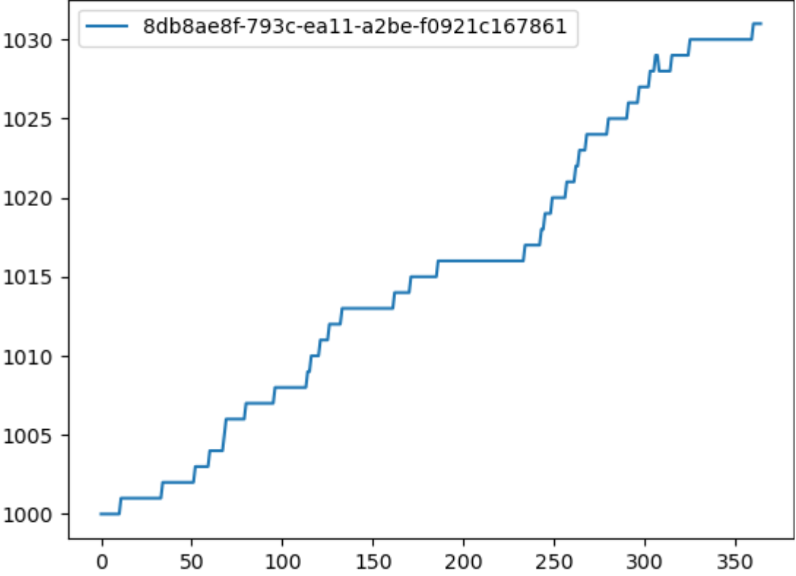

Plot data¶
You can use IDM-Tools to plot the output results of the analysis of simulations and experiments. You must include a plotting library within your script. For example, with Python a common plotting library is matplotlib (https://matplotlib.org/).
The following shows how to add matplotlib to a reduce method for plotting the output results of a population analyzer:
def reduce(self, all_data: dict) -> Any:
output_dir = os.path.join(self.working_dir, "output")
with open(os.path.join(output_dir, "population.json"), "w") as fp:
json.dump({str(s.uid): v for s, v in all_data.items()}, fp)
import matplotlib.pyplot as plt
fig = plt.figure()
ax = fig.add_subplot()
for pop in list(all_data.values()):
ax.plot(pop)
ax.legend([str(s.uid) for s in all_data.keys()])
fig.savefig(os.path.join(output_dir, "population.png"))
The reduce method uses the output from the map method, which is InsetChart.json, as the input for plotting the results of the Statistical Population channel:
filenames = ['output/InsetChart.json']
def map(self, data: Any, item: IItem) -> Any:
return data[self.filenames[0]]["Channels"]["Statistical Population"]["Data"]
The final results are plotted and saved to the file, population.png:
{kind=link}
